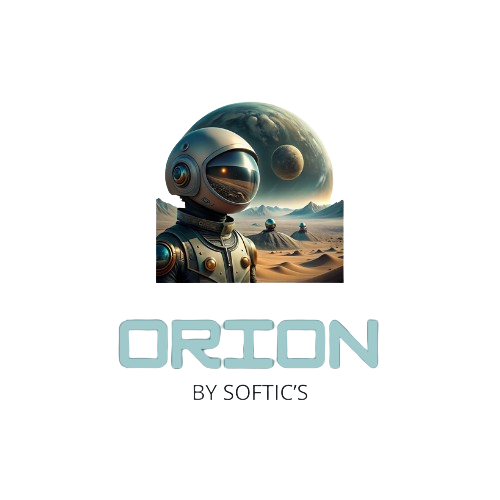

Personajes
Sinopsis
Un mundo en que, sólo los más privilegiados, tienen la opción de modificar a sus descendientes genéticamente. El
planeta Tierra está en crisis, la sobrepoblación ha agotado los recursos naturales, casi por completo, y el gobierno
ha lanzado un proyecto secreto para colonizar Marte.
Tres soldados de élite, modificados genéticamente y con habilidades especiales, son seleccionados para esta misión
peligrosa. Sin embargo, su objetivo no es solo la colonización, sino también descubrir qué ocurrió con una misión
anterior que desapareció misteriosamente. Al llegar a Marte, pronto se dan cuenta de que no están solos. Criaturas
nativas hostiles y tecnología alienígena desconocida les esperan, así como secretos oscuros relacionados con la
misión anterior y el Proyecto HGMP-1, un experimento fallido de modificación genética.
